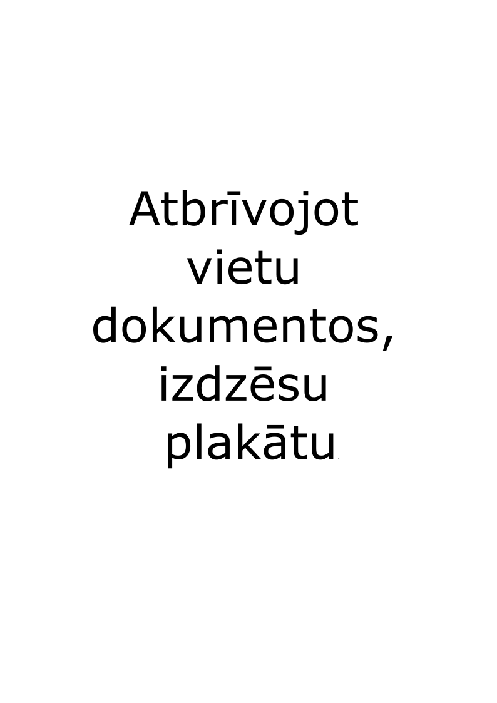

Bieži lietojamus priekšmetus turi tuvu ķermenim, lai varētu ērti paņemt, taču, ja kaut kas nav aizsniedzams, tad piecelies, lai to paņemtu, nevis liecies neērtās pozīcijās.
Ja runā pa telefonu, neturi to starp galvu un kaklu, bet izmanto skaļruni vai austiņas, lai neradītu dskomfortu muskuļiem.
Pēc iespējas vairāk strādā telpā ar dienasgaismu, taču tā, lai ar monitoru neveidotos tiešs atspīdējums.
Ja strādā no mājām, neiekārto dīvānu par darbavietu, sēžot neērtās pozīcijas var rasties muskuļu nejūtīgums un diskomforts.
Ja telpu izmanto tikai tu, pielāgo galdu, krēslu un darba vietu sev, lai nerastos diskomforts ilgtermiņā.
Dienas laikā pēc iespējas vairāk kusties, veic pēc iespējas vairāk soļu, pat ja esi mājās.
Ik pēc 20 minūtēm uz 20 sekundēm paskaties uz kaut ko lielākā attālumā no tevis, lai atpūtinātu acis.
Pat ja esi aizņemts neatcel pusdienas un dzer daudz ūdeni, tas dod iemeslu piecelties, izkustēties un atpūtināt acis.
Maini darbu intensitāti, kā arī pa brīdim nepārbaudi saņemtos ziņojumus, lai pievērstu umanību darbam.
Regulāri maini pozīcijas, kurās veic darbu, daļu laika strādā sēdus, daļu stāvus.
Regulāri ieturi kādu pauzi, ja nevari regulēt galda augstumu, vismaz ik stundu piecelies un pakusties.
Izmanto 20/20/20 noteikumu: Ik pēc 20 minūtēm, 20 sekundes skaties tālāk no sevis, piemēram, uz kādu koku vai māju aiz loga.
Ar acīm gaiša lēnām "zīmē" bezgalības zīmi, dari to 5 vai vairāk reizes, lai atpūtinātu acis.
Izstiep roku uz priekšu, ar otru roku lēnām pavelc pirkstus uz savu pusi. Paturi 15 sekundes.
Saliec rokas aiz muguras un lēnām tās cel uznaugšu, atverot krūškurvi.
Sēžot pacel vienu roku virs galvas un slēnām noliecies un pretējo sānu.